檸檬
- 檸檬
- 城のある街
- 雪後
- プロット1
- プロット2
その日私はいつになくその店で買物をした。というのはその店には珍しいが出ていたのだ。檸檬などごくありふれている。がその店というのも見すぼらしくはないまでもただあたりまえの八百屋に過ぎなかったので、それまであまり見かけたことはなかった。いったい私はあの檸檬が好きだ。レモンエロウの絵具をチューブから搾り出して固めたようなあの単純な色も、それからあのの詰まった紡錘形のも。――結局私はそれを一つだけ買うことにした。それからの私はどこへどう歩いたのだろう。私は長い間街を歩いていた。始終私の心を圧えつけていた不吉な塊がそれを握った瞬間からいくらかんで来たとみえて、私は街の上で非常に幸福であった。あんなにかった憂鬱が、そんなものので紛らされる――あるいは不審なことが、逆説的なほんとうであった。それにしても心というやつはなんという不可思議なやつだろう。
その檸檬の冷たさはたとえようもなくよかった。その頃私はを悪くしていていつも身体に熱が出た。事実友達のに私の熱を見せびらかすために手の握り合いなどをしてみるのだが、私の掌が誰のよりも熱かった。その熱いだったのだろう、握っている掌から身内に浸み透ってゆくようなその冷たさは快いものだった。
私は何度も何度もその果実を鼻に持っていってはいでみた。それの産地だというカリフォルニヤが想像に上って来る。漢文で習った「売柑者之言」の中に書いてあった「鼻をつ」という言葉がれぎれに浮かんで来る。そしてふかぶかと胸一杯に匂やかな空気を吸い込めば、ついぞ胸一杯に呼吸したことのなかった私の身体や顔には温い血のほとぼりが昇って来てなんだか身内に元気が目覚めて来たのだった。……
実際あんな単純な冷覚や触覚や嗅覚や視覚が、ずっと昔からこればかり探していたのだと言いたくなったほど私にしっくりしたなんて私は不思議に思える――それがあの頃のことなんだから。
私はもう往来を軽やかな昂奮に弾んで、一種誇りかな気持さえ感じながら、美的装束をして街をした詩人のことなど思い浮かべては歩いていた。汚れた手拭の上へ載せてみたりマントの上へあてがってみたりして色の反映をったり、またこんなことを思ったり、
――つまりはこの重さなんだな。――
その重さこそづね尋ねあぐんでいたもので、疑いもなくこの重さはすべての善いものすべての美しいものを重量に換算して来た重さであるとか、思いあがったからそんな馬鹿げたことを考えてみたり――なにがさて私は幸福だったのだ。
どこをどう歩いたのだろう、私が最後に立ったのは丸善の前だった。平常あんなに避けていた丸善がその時の私にはやすやすと入れるように思えた。
「今日はつ入ってみてやろう」そして私はずかずか入って行った。
しかしどうしたことだろう、私の心を充たしていた幸福な感情はだんだん逃げていった。香水の壜にもにも私の心はのしかかってはゆかなかった。憂鬱が立てめて来る、私は歩き廻った疲労が出て来たのだと思った。私は画本の棚の前へ行ってみた。画集の重たいのを取り出すのさえ常に増して力が要るな！ と思った。しかし私は一冊ずつ抜き出してはみる、そして開けてはみるのだが、克明にはぐってゆく気持はさらに湧いて来ない。しかも呪われたことにはまた次の一冊を引き出して来る。それも同じことだ。それでいて一度バラバラとやってみなくては気が済まないのだ。それ以上はらなくなってそこへ置いてしまう。以前の位置へ戻すことさえできない。私は幾度もそれを繰り返した。とうとうおしまいには日頃から大好きだったアングルのの重い本までなおいっそうのえがたさのために置いてしまった。――なんという呪われたことだ。手の筋肉に疲労が残っている。私は憂鬱になってしまって、自分が抜いたまま積み重ねた本の群を眺めていた。
以前にはあんなに私をひきつけた画本がどうしたことだろう。一枚一枚に眼をし終わって後、さてあまりに尋常な周囲を見廻すときのあの変にそぐわない気持を、私は以前には好んで味わっていたものであった。……
「あ、そうだそうだ」その時私はの中のを憶い出した。本の色彩をゴチャゴチャに積みあげて、一度この檸檬で試してみたら。「そうだ」
私にまた先ほどの軽やかな昂奮が帰って来た。私は手当たり次第に積みあげ、またしく潰し、また慌しく築きあげた。新しく引き抜いてつけ加えたり、取り去ったりした。奇怪な幻想的な城が、そのたびに赤くなったり青くなったりした。
やっとそれはでき上がった。そして軽く跳りあがる心を制しながら、その城壁の頂きに恐る恐るを据えつけた。そしてそれは上出来だった。
見わたすと、その檸檬の色彩はガチャガチャした色の階調をひっそりと紡錘形の身体の中へ吸収してしまって、カーンと冴えかえっていた。私はっぽい丸善の中の空気が、その檸檬の周囲だけ変に緊張しているような気がした。私はしばらくそれを眺めていた。
不意に第二のアイディアが起こった。その奇妙なたくらみはむしろ私をぎょっとさせた。
――それをそのままにしておいて私は、なにわぬ顔をして外へ出る。――
私は変にくすぐったい気持がした。「出て行こうかなあ。そうだ出て行こう」そして私はすたすた出て行った。
変にくすぐったい気持が街の上の私をませた。丸善の棚へ黄金色に輝く恐ろしい爆弾を仕掛けて来た奇怪な悪漢が私で、もう十分後にはあの丸善が美術の棚を中心として大爆発をするのだったらどんなにおもしろいだろう。
私はこの想像を熱心に追求した。「そうしたらあの気詰まりな丸善もみじんだろう」
そして私は活動写真の看板画が奇体な趣きで街をっている京極を下って行った。
- 
- 